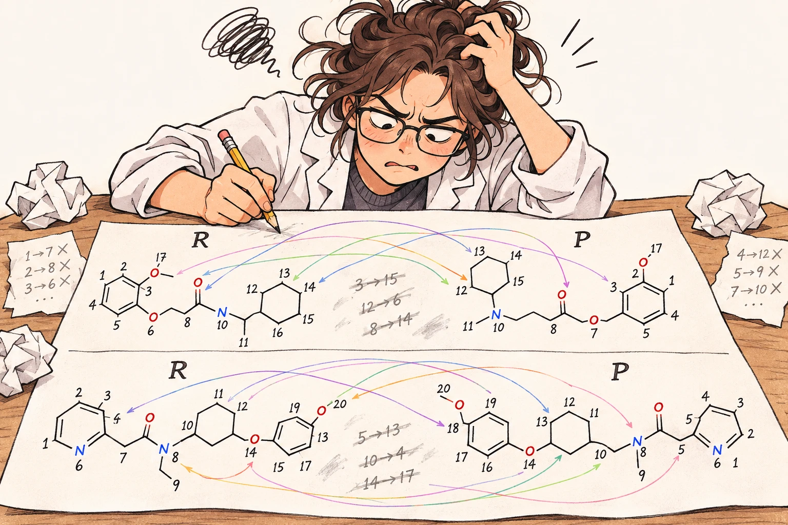
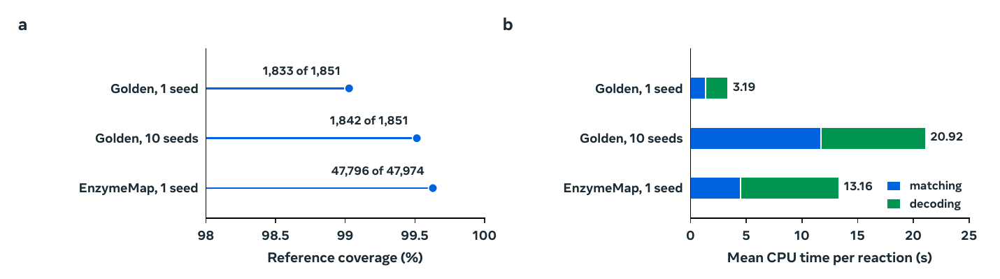
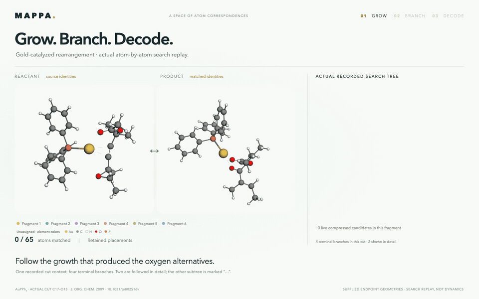
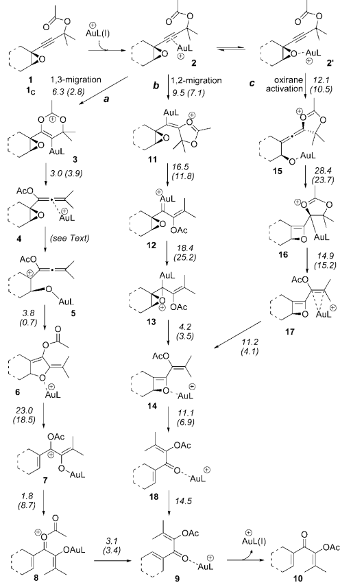
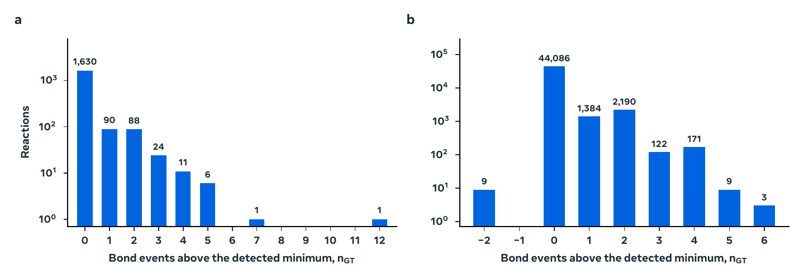
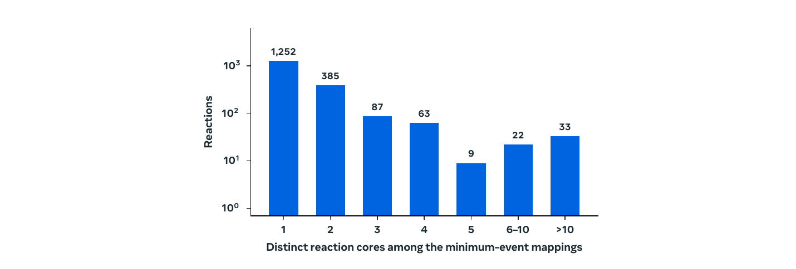
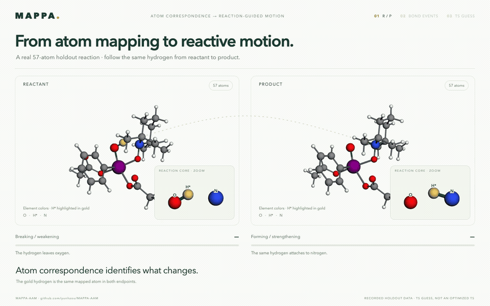
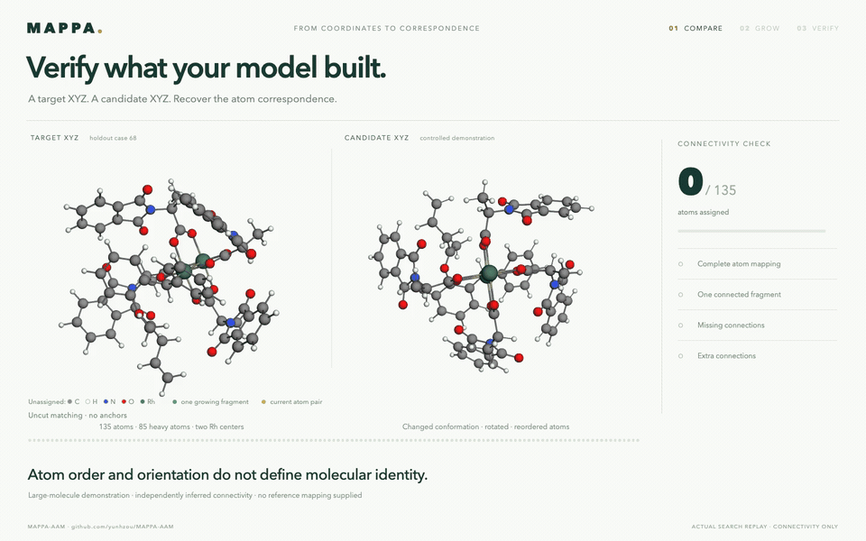
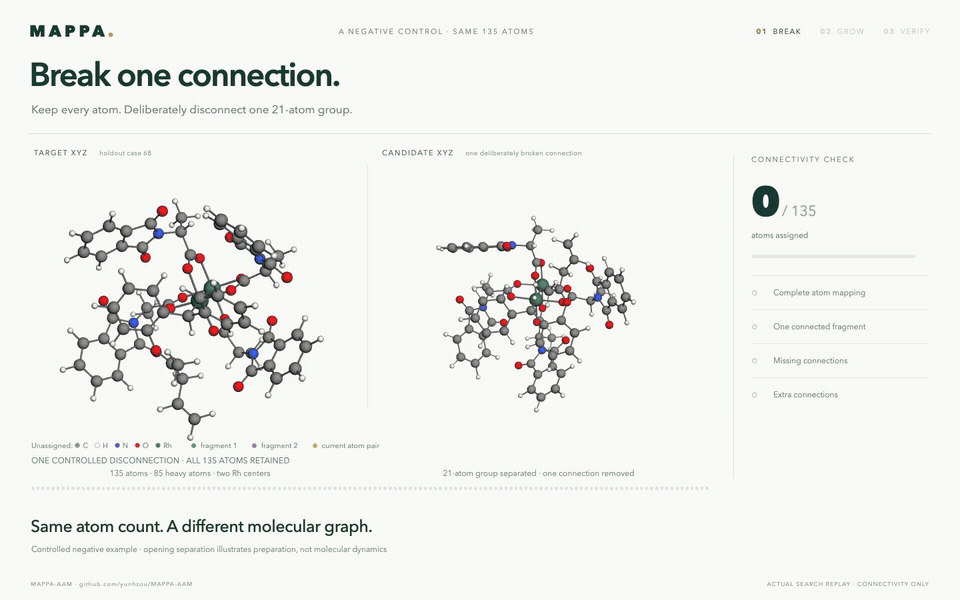

MAPPA, an atom mapper that recovers 99% of the Golden and EnzymeMap benchmarks
I’m doing my PhD in computer science, but my background in chemistry, biology, and materials science has given me a lasting fascination with the questions these fields tackle—and a deep respect for the scientists working on them. While building agentic systems for science, I learned that one of the hardest problems chemists face is finding reaction pathways: figuring out how reactants become products through a sequence of intermediate states. A particularly challenging part is locating the transition states that connect those intermediates.
As I learned how transition states are found, I kept hearing the same frustration from chemists. Methods such as the nudged elastic band (NEB) method start with reactant and product structures and require an atom-by-atom correspondence between them to construct an initial path. But that correspondence does not come for free. For large, complex structures, matching atoms manually can be tedious and prone to errors. Simply aligning the structures by minimizing their RMSD does not resolve the problem either, especially when their conformations differ substantially.

That led me to a deceptively simple question: given the reactants and products of an elementary step, which atom on one side corresponds to which atom on the other? Chemists can often look at two structures and recognize what has changed. I wanted to understand how to turn that intuition into an algorithm. It looked like an interesting graph problem, I told myself. I did not yet know that it had a name—atom-to-atom mapping—or that it had almost fifty years of research behind it. So I started trying to build an algorithm.
Five months later, MAPPA is out. It started as a side project and became my favorite one. Its algorithm follows an intuition familiar to anyone reading a reaction: find the structural fragments that the two sides share, one after another.
Two kinds of atom mapper
A mapper can predict a single correspondence or return several alternatives for later evaluation using chemical rules, a learned ranking, or energy calculations. Learned mappers such as RXNMapper and LocalMapper predict a single mapping. Other methods, dating back to at least 2008, enumerate all mappings that minimize bond changes: bonds that break, form, or change order. MAPPA takes the second approach.
MAPPA finds the reference mapping for over 99% of reactions in both benchmarks
We gave MAPPA only the reactants and products for each reaction. On Golden, its candidates included the dataset’s annotated mapping (the reference) for 1,833 of 1,851 reactions (99.03%). On EnzymeMap, it found the reference for 47,796 of 47,974 enzymatic reactions (99.63%). We call that share the reference coverage.
With standard settings, MAPPA averaged 3.19 CPU seconds per reaction on Golden and 13.16 on EnzymeMap. Running the Golden search from ten random starting orders instead of one raised reference coverage to 99.51%.

On the same Golden reactions, five mappers that each return a single mapping (LocalMapper, Chython, RXNMapper, RDT and Indigo) matched the reference on 37% to 87% of reactions. SLAP returns multiple candidates. It found the reference for 86% of reactions with its default settings and 97% with the wider search we added.
This comparison favors methods that return several candidates, since any one of them can match the reference. Choosing the most chemically plausible candidate is a separate task. Chemical rules or a learned model can help rank the alternatives.
1. A mapping is an observation on the chemical pathway
A reaction follows a pathway: bonds break and form in some order, through intermediates and transition states. A mapping records none of that. It records what the pathway leaves behind, which is where each atom started and where it ended. This is the idea I keep coming back to: a mapping is an observation on the chemical pathway, and a single mapping stands for one solved pathway.
If that is right, different pathways can leave different observations, and they do. In this gold-catalysed rearrangement, MAPPA is given only the initial and final structures, and it returns mappings with two different destinations for the epoxide oxygen: the ester link of the product, or its ketone.

The original study proposes three routes for this reaction, labelled a, b and c.

Follow the epoxide oxygen, in red, along routes a and b, and you can see where each observation comes from.
MAPPA did not compute a single one of these steps. It only reported that the oxygen has two possible destinations, and each one agrees with a different route: the ester link with route a, the ketone with routes b and c. The study then favours route a on energetic grounds.
So choosing one mapping means choosing a pathway, and the initial and final structures alone do not hold enough information for that. A mapper that returns one answer anyway is claiming more than it can know. What it can say from those two structures is which atom assignments are the same in every mapping and which differ between mappings: atoms that symmetry makes interchangeable, and atoms with more than one possible origin.
Chemists already work this way. A chemist who is unsure which atom went where does not guess. She draws two or three mechanisms and lets further evidence decide. I wanted a mapper with the same manners: return the alternative mappings now, and choose the one that matches the mechanism later, when more of the chemistry is known.
2. The fewest bond changes is a shortlist, not the answer
The oldest rule for choosing a mapping is to take the one that changes the fewest bonds. I like this rule. It is simple, and most of the time it is right. But it cannot always single out one mapping. Take a reaction from EnzymeMap: formaldehyde and hydroxypyruvic acid give dihydroxyacetone and CO₂. In the reference mapping, the formaldehyde carbon ends up in dihydroxyacetone. MAPPA also finds a mapping in which it ends up in CO₂.
Both mappings change six bonds once the bonds to hydrogen are counted. The rule has nothing to say here, and a mapper that returns one of the two quietly hides the other.
Because MAPPA returns the alternatives together with their numbers of bond changes, we could simply measure how often the reference is a mapping with the fewest bond changes.

On Golden, 88 of every 100 reference mappings have exactly the lowest number of bond changes that MAPPA found for their reaction, and 92 of every 100 on EnzymeMap. Nearly all of the others have at most five more. As a shortlist, the rule is very good.

As a final answer I trust it less, for two reasons. In about a third of the Golden reactions, the mappings with the fewest bond changes do not all change the same bonds, so the rule leaves more than one answer. And when a reaction proceeds through several steps, the mapping that matches its mechanism can change more bonds than the fewest possible. One Golden reaction shows both.
An unsaturated alcohol and acetophenone close a ring and release water, a Prins-type cyclization with several steps. In the reference, the carbonyl oxygen leaves as water, which changes nine bonds. If the alcohol oxygen leaves instead, eight bonds change. MAPPA finds two different sets of eight bond changes, and it finds the reference with nine. A mapper that returns only the mappings with the fewest bond changes would miss the reference here. This is why MAPPA also returns mappings that change more bonds than the fewest it found, up to the number of extra bond changes that the user allows. With our setting of five, the reference of this reaction is returned.
3. Growing before branching keeps the placements few
Returning alternatives sounds expensive, and done naively it is: every group of atoms that can be assigned in more than one way multiplies the number of mappings. What matters is when the search commits to one of those ways. MAPPA builds mappings from fragments, which are substructures present in both the initial and the final state. It grows one fragment at a time in one of the two states, called the base, and checks that the fragment still fits somewhere in the other state, called the target. Each place where it fits is a placement.
A lone carbon has nine placements in this target. Branching there, which means continuing the search separately from each placement, would open nine searches, and six of them lead nowhere. So during growth MAPPA is deliberately lazy and asks one question only: does at least one placement exist? If it does, the fragment keeps growing, whether there is one placement or many. A bond that cannot be added is set aside, and growth continues with the others. MAPPA asks for every placement only when nothing more can be added. By then the fragment is specific enough that three placements remain.
The same reasoning explains bad starting points. A fragment that starts on a lone hydrogen fits almost everywhere. MAPPA limits the number of branches and discards the largest groups of them first, so atoms with many placements are assigned later, when few atoms are left.
4. Storing placements, not mappings, keeps the output compact
Each placement locks its atoms, and the next fragment grows in the atoms that are left. The placements open to a fragment therefore depend on the placements chosen before it. In the example above, the base has three such alcohol fragments, A, B and C: three sites are open for A, two for B and one for C.
A branch is one complete sequence of placements. There are six branches but only nine distinct fragment placements, and MAPPA stores each one once. A fragment counts as new only if it occupies a different set of atoms. Rearrangements within the same atoms, such as exchanging the three hydrogens of a methyl group, are symmetry, and MAPPA stores a symmetry as a rule, not as a list of mappings. Here the six branches stand for 1,296 atom-by-atom mappings, and not one of them is ever written out.
There is a catch. A symmetric rearrangement does not always leave the bond changes the same: exchanging two atoms that are equivalent by connectivity adds bond changes when their bond orders differ.
MAPPA works this out once per fragment: a small table from each allowed rearrangement to the bond changes it causes. Every branch that contains the fragment reuses the table. That keeps a question such as "which mappings change at most n bonds?" cheap to answer.
MAPPA is useful beyond mapping benchmarks
An anchor fixes what is known, and MAPPA completes the rest
Sometimes part of a mapping is already known, from an isotope label or from a mechanism that is trusted. An anchor fixes that atom pair, and MAPPA completes the rest of the mapping around it. In the formaldehyde reaction above, anchoring the formaldehyde carbon to dihydroxyacetone or to CO₂ selects one of the two mappings shown earlier.
We use the same feature in the paper. For the few references that the search without anchors did not return, we anchor the annotated atom pairs, let MAPPA complete the rest, and compare its number of bond changes with the lowest number found without anchors.
A mapping picks out the reactive vibration of a transition state
This is the use I built MAPPA for. A mapping says which bonds weaken and which strengthen, and that is enough to tell which vibration of a transition-state guess corresponds to the reaction. In this 57-atom hydrogen transfer, the mapping marks an O–H bond that weakens and an N–H bond that strengthens. MAPPA scores each vibrational mode of the guess by how far it moves along those bond changes. On a scale from 0 to 1, the imaginary mode scores 0.87, and a stable mode, shown for comparison, scores 0.11.
It is less simple than it looks. When symmetry leaves more than one possible reaction core, that is, more than one set of bonds that change, each one has to be scored against the modes. So even here, where I only wanted one number, I needed the alternatives.

One grown fragment verifies what a model built
Generative models now propose three-dimensional structures, and someone has to check that a structure is the molecule that was asked for. MAPPA checks this by growing one fragment across the whole target. Here the candidate has a different conformation, orientation and atom order. All 135 atoms and all 148 connections match.

Now remove one C–C connection. Every atom is still present, so an atom count would pass. MAPPA returns two fragments, of 114 and 21 atoms, and reports the one missing connection.

MAPPA could serve as a verifier in chemistry post-training
Post-training a language model for chemistry, for example by reinforcement learning with verifiable rewards, needs a program that can check the model's answer. Code has tests and mathematics has proof checkers. For chemistry, I think the checker has to compare structures: is this the right molecule, are all atoms accounted for, and which bonds changed?
MAPPA could potentially fill that role. Given a structure that a model proposes, it can check the structure against the target atom by atom. Given a mapping or a set of bond changes that a model proposes for a reaction, it can check them against the mappings that MAPPA finds for the same initial and final states. In both cases it reports what is wrong: which atoms are unmatched, which connection is missing, which bonds change. A reward could be built from that, and because MAPPA returns the alternatives, a valid mapping that differs from the one in a dataset would not be marked wrong. This is a possibility I would like to see tested, not a result.